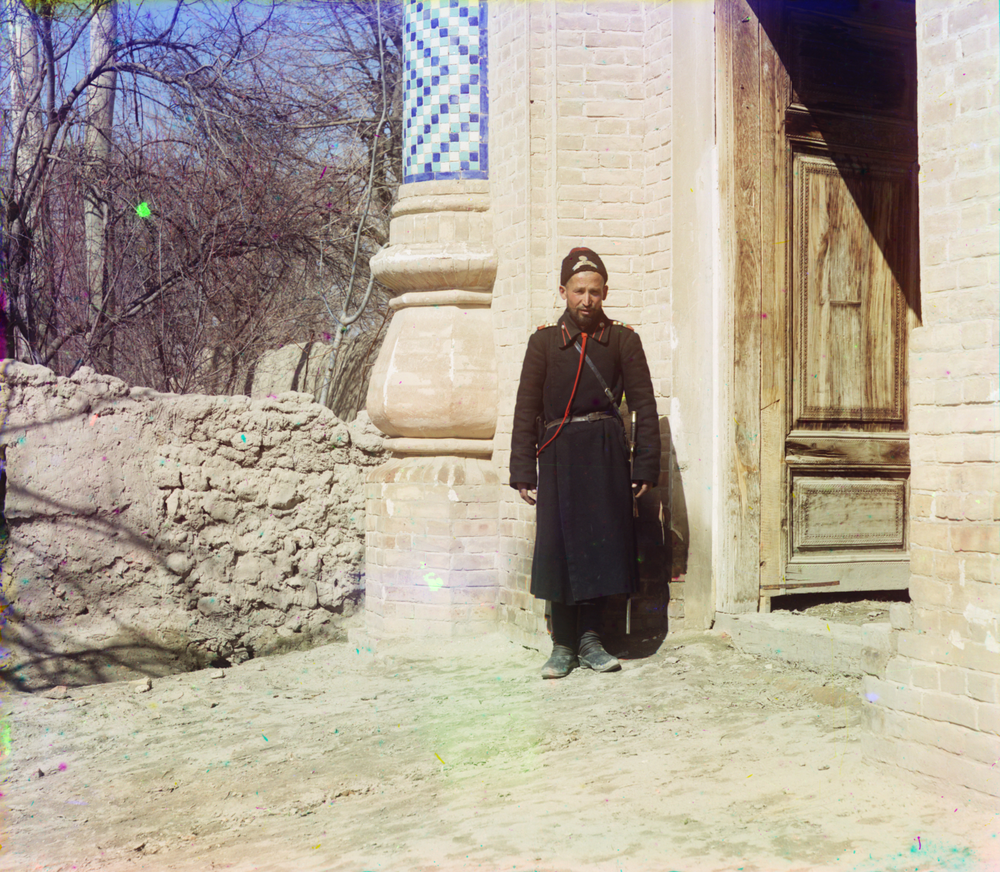

1916-yil Turkiston qo‘zg‘oloni va «mardikorlik»: majburiy safarbarlik, qatag‘on va ommaviy qochqinlik
1916-yil 25-iyunda (eski sana) Rossiya imperatori Nikolay II Turkiston va Dasht o‘lkasi mahalliy aholisini Birinchi jahon urushi front orti ishlariga majburan safarbar qilish («mardikorlik») haqida farmon chiqardi. Bu Turkistonning eng yirik mustamlakachilikka qarshi qo‘zg‘oloniga sabab bo‘ldi; Jizzax qo‘zg‘oloni shafqatsiz bostirildi, minglab odam halok bo‘ldi va ommaviy qochqinlik boshlandi. Bu — faqat manbalarga asoslangan tarixiy ma’lumotnoma.

1916-yil 25-iyunda (eski sana; yangi sana bo‘yicha 8-iyul) Rossiya imperatori Nikolay II Turkiston va Dasht general-gubernatorliklaridagi mahalliy, «musulmon» aholini Birinchi jahon urushi davrida front orti ishlariga — istehkom va harbiy yo‘l qurilishi, mudofaa ishlari uchun majburan safarbar qilish haqida farmon chiqardi. Safarbarlik 19 yoshdan 43 yoshgacha bo‘lgan erkaklarni qamrab oldi. Front orti ishchilari xalq orasida «mardikor» deb ataldi. Quyida faqat manbalarga asoslangan faktlar keltiriladi.
Nega norozilik kuchli bo‘ldi
Turkiston Rossiya imperiyasi tarkibiga kiritilganda mahalliy musulmon aholi harbiy xizmatga chaqirilmasligi va’da qilingan edi. 1916-yilgi farmon bu va’dani buzdi. Buning ustiga safarbarlik ro‘yxatlari ko‘pincha korrupsiya bilan — boylar pul evaziga ro‘yxatdan chiqarilib, kambag‘allar majburan olinishi bilan — o‘tkazildi. Iqtisodiy, siyosiy, diniy va milliy zulm qo‘zg‘olonning asosiy sabablari deb ko‘rsatiladi.
Qo‘zg‘olonning yoyilishi
Norozilik 1916-yil iyul oyida butun Turkiston bo‘ylab qo‘zg‘olonga aylandi. Hozirgi O‘zbekiston hududida u Farg‘ona vodiysi, Samarqand viloyati va Toshkentda, ayniqsa Jizzaxda kuchli bo‘ldi. Eng keng ko‘lamli ommaviy qochqinlik esa Yettisuv (hozirgi Qirg‘iziston va Qozog‘iston) hududida kechdi.

Jizzax qo‘zg‘oloni
1916-yil iyulda Jizzaxda ko‘tarilgan qo‘zg‘olon taxminan ikki hafta davom etdi va 26-iyulga kelib bostirildi. Qo‘zg‘olonga Nazir Eshon (Nazirxo‘ja) boshchilik qildi; rus polkovnigi Rukin jangda halok bo‘ldi. Manbalarga ko‘ra, 83 nafar rus ko‘chmanchisi o‘ldirildi, 70 nafari asir olindi. Qo‘zg‘olonni bostirish uchun Toshkentdan 13 rota, 6 to‘p va kazaklar jo‘natildi; Zomin va Jizzax qaytarib olinishida ko‘plab mahalliy tinch aholi halok bo‘ldi. Polkovnik Rukin halok bo‘lgan hudud 5 chaqirim masofada vayron etilib, davlat mulkiga aylantirildi. Nazir Eshon osib o‘ldirildi, qolgan qatnashchilar qamoq va surgunga hukm qilindi.
Qurbonlar va qatag‘on
Qo‘zg‘olonni bostirish qishloqlarni yoqish, ekinlarni payhon qilish, yerlarni tortib olish va aholini ko‘chirish bilan kechdi. Butun Markaziy Osiyo bo‘yicha qurbonlar soni bo‘yicha baholar keng tarqaladi: qirg‘iz tarixchisi Batirbayevaning aholi hisobiga asoslangan bahosida taxminan 40 000, Edvard Sokolning 1954-yilgi bahosida esa 270 000 ga yaqin mahalliy aholi halok bo‘lgan deyiladi. Rossiya tomonining yo‘qotishi 2 325 o‘lgan va 1 384 bedarak yo‘qolgan kishi sifatida qayd etilgan.
Ommaviy qochqinlik — «Urkun»
1916-yil kuzida bostiruvdan qochib, o‘n minglab qirg‘iz va qozoq Xitoy (Sharqiy Turkiston) tomon yo‘l oldi — bu voqea tarixda «Urkun» (qochish) nomi bilan qoladi. Qochqinlarning ko‘pchiligi Tyan-Shanning 3 000 metrdan baland dovonlarida sovuq va ochlikdan halok bo‘ldi. Turkistonning o‘zbek va boshqa aholisidan ham bir qismi ta’qibdan Afg‘oniston va Sharqiy Turkistonga (Qashqar) qochib o‘tdi.
Tarixiy ahamiyati va migratsiyaga ta’siri
1916-yilgi qo‘zg‘olon Turkistondagi eng yirik mustamlakachilikka qarshi chiqish bo‘ldi va keyingi voqealar — 1917-yilgi inqilob hamda 1918-yildan boshlangan Basmachilik harakati va u bilan bog‘liq ommaviy muhojirlik to‘lqinlari uchun zamin yaratdi. Shu tariqa 1916-yil Turkistondan majburiy ko‘chish va siyosiy muhojirlik tarixidagi muhim burilish nuqtalaridan biri hisoblanadi. Mustafo Cho‘qay boshchiligidagi Turkiston siyosiy muhojirligining shakllanishi ham shu davr voqealari bilan bog‘liq.
Xulosa: 1916-yilgi «mardikorlik» farmoni Turkistonda ommaviy qo‘zg‘olonga sabab bo‘ldi; qo‘zg‘olon shafqatsiz bostirildi, minglab odam halok bo‘ldi va o‘n minglab kishi chet elga qochdi. Bu voqealar o‘zbek va umuman markaziyosiyolik aholining majburiy migratsiyasi tarixida chuqur iz qoldirdi. Ma’lumotnomadagi sanalar va raqamlar keltirilgan manbalarga asoslanadi.